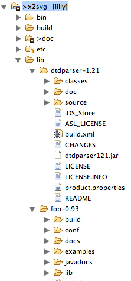
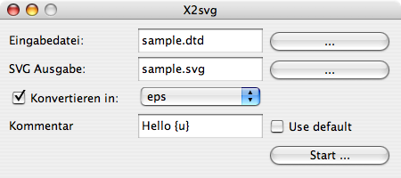

[
Start ]
[ Install etc. ]
[
Changelog ]
[
Todos ]
[
SourceForge]
[
Symbols ]
[
Properties ]
[
JavaDoc ]
[
FreshMeat ]
[
Ohloh ]
[
Browse source ]
x2svg
Contents
To use x2svg, you need fop and dtdparser, which need to be present in the lib/ folder. In addition you need ant to build the distribution and use x2svg
as ant tasks in build scripts.
Dependencies like FOP and DTDParser can now be pulled down by executing:
ant pull-dependencies
This also pulls ant.jar into lib/ from the ant distribution.
Those dependencies can also manually be obtained from:
- DTDParser: from Mark Wutkas page at wutka.com. Use the 1.21
version.
- FOP: from Apache at xmlgraphics.apache.org. Pick the 0.95beta version
- Apache ant from ant.apache.org. One of the 1.6 versions is ok. Ant is needed for building
the software (which could also be built from within the IDE) and to compile the ant task support.
- TestNG from TestNG.org. TestNG 5.6 does fine. Put the library
testng-5.6-jdk15.jar into a folder testng within the lib/ directory.
Unzip the distributions into the
lib/ folder of the
x2svg project. The file structure should
look like this:

Go into the project and call
ant. This should build all the necessary files for you.
The build file knows those targets:
- all: build the whole show
- compile: compile the sources
- package: jar up the generated classes
- javadoc: generate the javadoc documentation in doc/javadoc
- run-sample: runs the application against the file sample.dtd to
produce a few output files in the out/ directory like:
sample-out.pdf and
sample-out.svg
- clean: clean up generated class files
- clobber: like clean, but also remove javadoc, generated samples and .jar files
- tests: runs the tests in the test suite
- run-gui: starts the simple Swing gui
- pull-dependencies: This target downloads the required libraries and puts them into the lib/ folder
To run the application, you need to put a big number of libs on the classpath.
To make this easier, you can use the
run.sh script on unix, which accepts the same command line
as the X2Svg java class:
run.sh [options] inputfile [root-element]
Options are:
- +/-a: allow / disallow attribute parsing. Depends on the parer if this is supported. Default is off
- -c [file][:type] : generate output in the format of type in file file
(see below for possible types)
- -o file : write output to <file>.svg instead of
<inputfile-basename>.svg
- -m (dtd|properties|ant|xsd): Use the given mode instead of guessing the input type
- -C comment : print a comment on the generated graph.
See here for supported substitutions.
- -P properties file : specifies the location of x2svg.properties
- -l list all available parsers.
- -p mode: show the parser specific help for the specified parser.
Use an asterisk '*' to get it for all parsers.
- -d: enable debug mode (with lots of non-interesting output :-)
- +/-M: allow / disallow parsing comments of elements (and possibly
attributes). Depends on the parser if this is supported. Default is off.
Example:
sh run.sh -c /tmp/test.pdf -o /tmp/test.svg sample.dtd root
The ant buildfile
build.xml shows how to run this from an ant script in the
run-sample target.
Note that option -c can be given multiple times.
X2svg usually tries to determine
the output file type from looking at the suffix (e.g.
.pdf), but this can be
overridden by giving a target type in the optional
:type part. If you want you can
specify the type multiple times to convert into all of those target types. The type specifications
need to be given next to each other then (as in
-c output.foo:png:pdf.
It is also possible to only speficy the type (as in
-c :pdf). In this case x2svg will determine
the output file name by chopping off the
.svg from the input file name and
appending the standard suffix for the given type.
It is as well possible to give an output directory with a file type only
(as in
-c foo/:png. In this case the output will be written into
directory
foo/ and
the filename will be deviated from the input filename.
X2svg has since version
1.1-gui a graphical user interface. You can start it
by running the class
de.bsd.x2svg.gui.X2SvgGui or use one of the start
scripts
runGui.bat or
runGui.sh.
After starting, the GUI will show a window like this (here in German locale):

The first two rows are used to select the input file and the svg output file. The two buttons labeled with '...' will show file selector boxes to browse the file system.
If the checkbox is checked (as shown), then x2svg will also try to convert the generated
svg file into another output format (see
below for formats).
On the next line, you can enter a comment that will printed on the generated diagram.
If the checkbox is markd, a default comment from the properties file
x2svg.properties will be used. See
here for supported substitutions.
Pressing the
Start button will start the conversion.
If you checked the "Show svg option", a second window will appear after the conversion that
shows the gnerated SVG. You can scroll around and use the '++','--','1:1' and 'x' controls
to zoom in, zoom out reset the size and center the display. See also
this screenshot.
Run the svg converters
The output converter SvgConverter can also be used standalone:
java de.bsd.x2svg.outputConverter.SvgConverter type(s) input.svg output[.type] [output dir]
As this also needs a bunch of libraries installed, a shell script
convert.sh is provided
as well.
This paragraph describes the various parsers present in the system.
DTDParser
This parser is able to parse Document type descriptions (DTD). If no root-element is given
on the command line, it will try to guess the root element.
If the parsers specific option '-d <depth>' is given, then the depth of the tree is limited to
depth levels instead of unlimited. This parer supports parsing of attributes.
Build.xml Parser
This parser is able to parse ant build.xml files. It will by default graph the call tree
when you just call ant on that buildfile without any targets (so it will use the default target).
By giving the '-f' option, it will go trough the build file and will graph a forest of all targets.
Properties Parser
This parser will just display all properties in a property file and is mostly meant as an example to start
writing own parsers.
XML Schema Parser
This parser is able to parse (some) XML Schema files. As it is still not finished,
it might not parse your schema.
By default, you need to give the name of the root element to parse.
It now also understands a few more options:
- -ls: limit substitutions. If this option is given, then a substitution will not be done, but only the type of substitution will be output.
- -d tree-depth: Limit printing the result tree to the given depth.
- -lt: limit type relpacement. If this option is given, then types will not preplaced by their definition, but only the name of the definition will be output
- -st: the passed root is the name of a start type.
This parer supports parsing of attributes.
There are a set of ant tasks that allow X2SVG to be used in any Ant-based automated build. This can be
incredibly useful for generating documentation as part of an automated build process, or for parsing
large and diverse content sets very simply.
To use X2SVG, simply ensure that X2SVG.jar is available on the ant classpath (either project
specific, or put in $ANT_HOME/lib for global availability of the X2SVG tasks.
Full documentation for the ant tasks can be found here.
*******************************************************************************
* Copyright (c) 2007,2008 Heiko W. Rupp. All rights reserved.
*
* This is free software; you can redistribute it and/or modify it
* under the terms of the GNU Lesser General Public License as
* published by the Free Software Foundation; either version 2.1 of
* the License, or (at your option) any later version.
*
* This software is distributed in the hope that it will be useful,
* but WITHOUT ANY WARRANTY; without even the implied warranty of
* MERCHANTABILITY or FITNESS FOR A PARTICULAR PURPOSE. See the GNU
* Lesser General Public License for more details.
*
* You should have received a copy of the GNU Lesser General Public
* License along with this software; if not, write to the Free
* Software Foundation, Inc., 51 Franklin St, Fifth Floor, Boston, MA
* 02110-1301 USA, or see the FSF site: http://www.fsf.org.
*******************************************************************************/
{kind=link}
{kind=link}